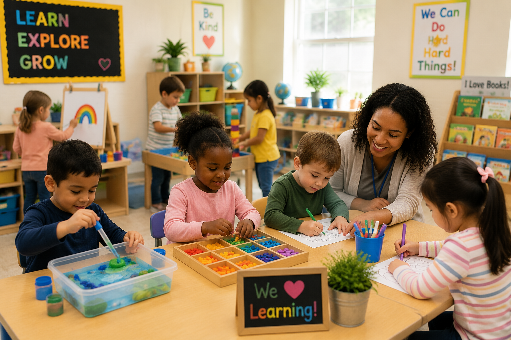
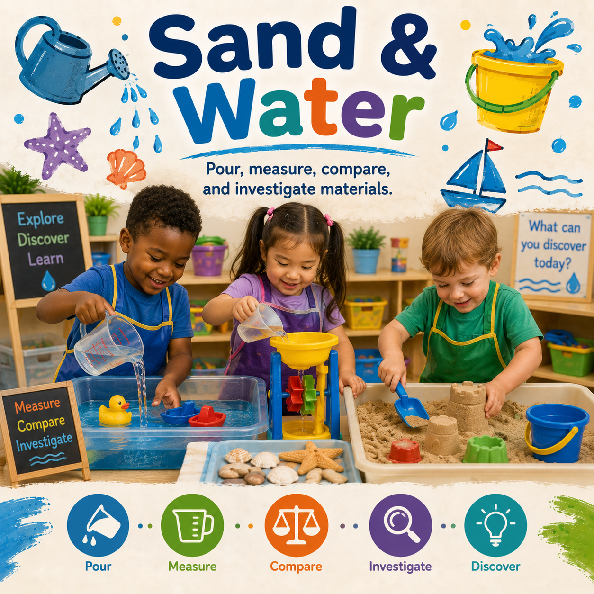

Sensory
Sensory Exploration
Encourage children to explore textures, sounds, colors, and movement through hands-on play.
Discover engaging activities created for Early Head Start, Head Start, Preschool, and Pre-K classrooms. Children learn through play, exploration, creativity, and meaningful hands-on experiences.

Find developmentally appropriate activities designed for every stage of early childhood.
Hands-on learning experiences designed to spark curiosity, creativity, and discovery.
Encourage children to explore textures, sounds, colors, and movement through hands-on play.

Simple investigations that encourage children to observe, predict, experiment, and discover.

Open-ended art activities that build creativity, fine motor skills, and self-expression.

Stories, songs, conversations, and activities that grow vocabulary.
Support every area of child development through meaningful play.
Problem solving, math, science, and discovery experiences.
Vocabulary, communication, books, and storytelling.
Art, music, movement, and imagination.
Friendship, emotions, confidence, and relationships.
Fine motor, gross motor, and movement activities.
Curiosity, persistence, and independence.
Find activities that fit every classroom learning center.

Children build, design, measure, and solve problems.

Develop language, imagination, and social skills through role play.

Pour, measure, compare, and investigate materials.
Fresh classroom ideas added to help teachers create meaningful learning experiences.
Children explore colors, movement, and cause-and-effect using simple sensory bottles.
Children collect and compare natural materials while building observation skills.
Children design and build structures while exploring balance, shapes, and problem solving.
Popular activity collections teachers use throughout the year.
Hands-on experiences that encourage exploration.
Songs, stories, discussions, and group learning.
Nature exploration and active learning ideas.
Activities that strengthen hand skills.
Counting, sorting, measuring, and patterns.
Songs, rhythm, dancing, and active play.
Activities that connect children with the world around them throughout the year.
Explore lesson plans, printables, curriculum studies, assessments, behavior resources, and classroom tools created for Early Head Start, Head Start, Preschool, and Pre-K educators.
Complete classroom investigations and studies.
Daily and weekly classroom planning resources.
Ready-to-use classroom materials.
Observation and documentation tools.
Positive guidance resources.
Browse the complete resource library.